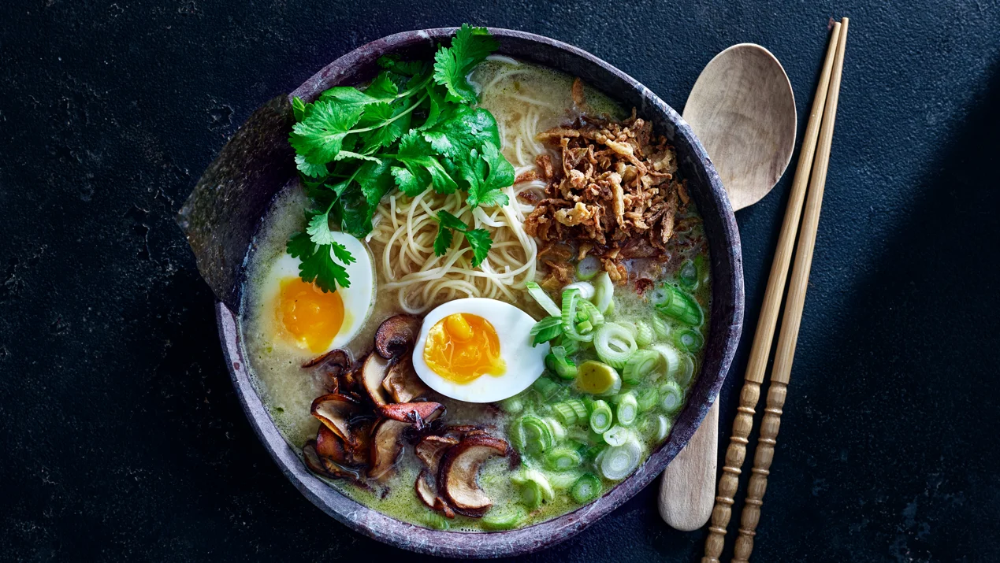

Ramen är en japansk nudelsoppa. Den är en variant av den kinesiska nudelsopprätten lā miàn, nudlar gjorda på vetemjöl, soja, ägg, salt och vatten, serverade tillsammans med en uppsjö av olika ingredienser. Ramen har blivit ordentligt integrerad i det japanska köket och många regionala variationer existerar